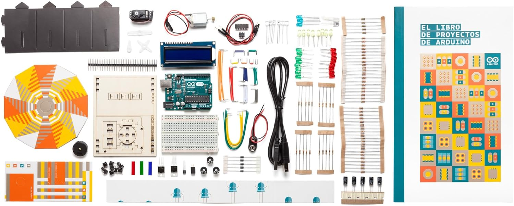

Recursos
Recull de recursos de professorat en obert per preparar i impartir la matèria, després d'una cerca per Espanya i part d'Europa.
Contingut
| Fitxer | Descripció |
|---|---|
Recursos_Professorat_Robotica_1Batx.xlsx |
Full de càlcul amb 54 recursos classificats: títol, breu explicació, tipus de recurs, enllaç, paraules clau i més (amb filtre automàtic). |
00_LLEGEIX-ME_Recursos.md |
Guia d'ús del full de càlcul (columnes, criteris de selecció i com filtrar). |
Com usar-lo
Obre el .xlsx, fes servir l'autofiltre de les columnes per trobar recursos per tipus (simulador, curs, documentació, banc de projectes…) o per paraula clau (Arduino, micro:bit, sensors, control…).
Els recursos prioritzen el nivell alt de la matèria (Arduino, micro:bit, Python/C++) i deixen de banda la programació per blocs.
Documents i recursos
Imatges i materials
